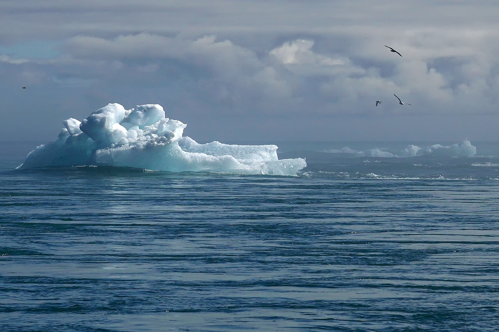

Lack of Awareness
Many people are unaware of the severity of water pollution and its long-term effects on health and the environment. Without proper education and awareness campaigns, it's difficult to mobilize communities for action.
Many people are unaware of the severity of water pollution and its long-term effects on health and the environment. Without proper education and awareness campaigns, it's difficult to mobilize communities for action.
Plastic waste continues to be a major contributor to water pollution. Its non-biodegradable nature means it accumulates in water bodies, harming marine life and ecosystems. Reducing plastic consumption and improving recycling processes are crucial to solving this challenge.
In many developing regions, sewage and wastewater treatment infrastructure is lacking. As a result, untreated waste is dumped directly into rivers, lakes, and oceans, which contaminates water and spreads diseases. Investment in sewage treatment plants is essential to address this issue.
Climate change is both a result and a driver of water pollution. Changes in temperature and weather patterns affect water quality, while floods and droughts exacerbate water scarcity and contamination. Addressing climate change is a critical part of the solution to water pollution.
